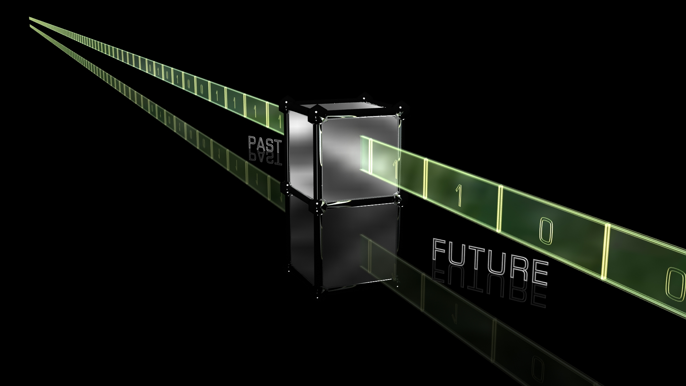
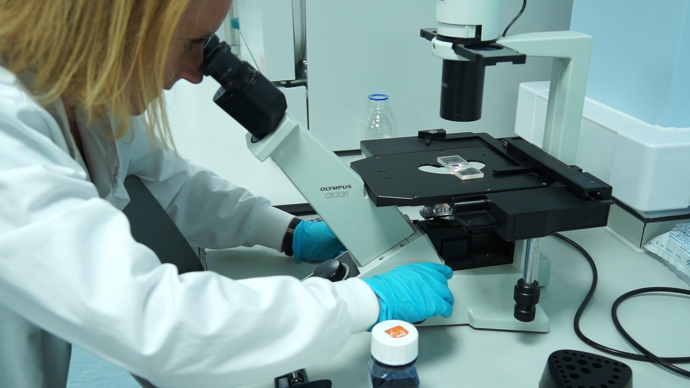
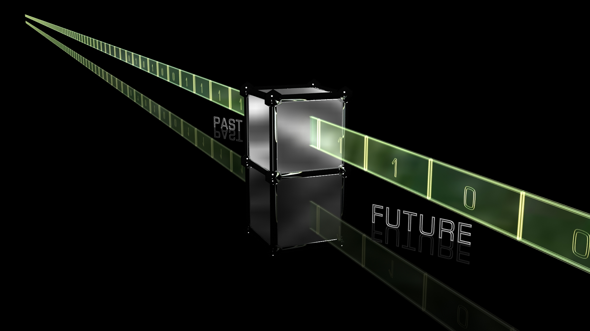
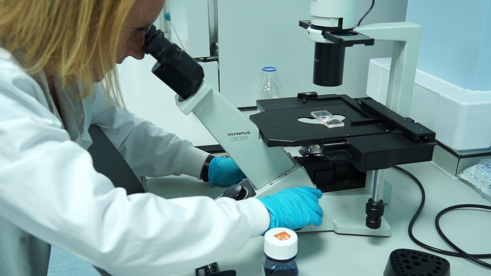

Overview
NIT Kurukshetra is committed to fundamental and applied research in frontier areas of engineering, technology and science streams. Expanding list of sponsored research projects reflects its noteworthy position in cutting edge research.Teaching and learning processes and research and development activities are supported by central facilities. The central library with state-of-the-art facilities houses a huge collection of 1,90,000 documents. The library subscribes to over 4500 journals and online resources. The centre of computing and networking provides computing and networking infrastructure for information access to students, faculty and staff through a campus wide local area network with OFC backbone. Focused attempts are made for the growth of the students by providing them with an array of extra- and co-curricular activities. State-of-the-art sports and games facilities including swimming pool, and technical and cultural clubs contribute to wholesome health and holistic development and of the students. During its exemplary journey of over five decades, NIT Kurukshetra has been successful in making remarkable strides in teaching, learning, research and outreach activities.
Mission & Vision
To be a role model in technical education and research, responsive to global challenges. To impart quality technical education that develops innovative professionals and enterpreneurs and to undertake research that generates cutting edge technologies and futuristic knowledge, focusing on the socio-economic needs.